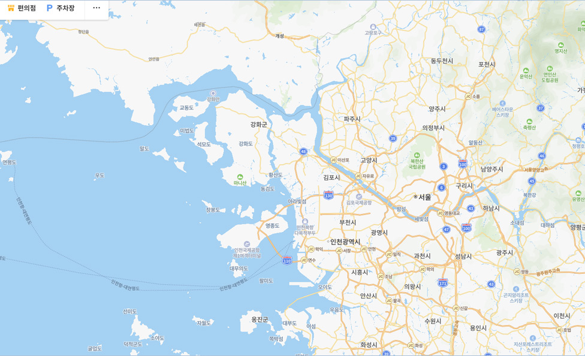

바로 가기
주 메뉴 바로가기
본문 바로가기
뒤로가기
전체 메뉴
기존 평가대상자 관리 및 평가
신규 평가대상자 추가 및 평가
도구매뉴얼
상담 센터 찾기
회원정보수정
로그아웃
상담 센터 찾기
나와 가까운 상담센터를 검색하세요.
검색
전체검색
지역 선택
지역을 선택해 주세요.
서울
경기
강원도
전라도
경상도
검색
중앙자살예방센터
서울시정신건강복지센터
서울시자살예방센터
성북구자살예방센터
강남구정신건강복지센터
강동구정신건강복지센터
강북구정신건강복지센터
강서구정신건강복지센터
관악구정신건강복지센터
광진구정신건강복지센터
중앙자살예방센터
서울시정신건강복지센터
서울시자살예방센터
성북구자살예방센터
강남구정신건강복지센터
강동구정신건강복지센터
강북구정신건강복지센터
강서구정신건강복지센터
관악구정신건강복지센터
광진구정신건강복지센터

지역 선택
중앙자살예방센터
서울특별시 중구 을지로 6 재능빌딩 11층
02-2203-0053
지역 선택
서울시정신건강복지센터
서울특별시 중구 을지로 6 재능빌딩 11층
02-2203-0053
지역 선택
서울시자살예방센터
서울특별시 중구 을지로 6 재능빌딩 11층
02-2203-0053
지역 선택
성북구자살예방센터
서울특별시 중구 을지로 6 재능빌딩 11층
02-2203-0053
도움정보
우울감 등 말하기 어려운 고민으로 전문가의 도움이 필요한 경우에는 아래의 전화번호로 전화하면 24시간 전문가의 상담을 받을 수 있습니다.
자살예방 핫라인 :
1577-0199
희망의 전화 :
129
생명의 전화 :
1588-9191
청소년 전화 :
1388